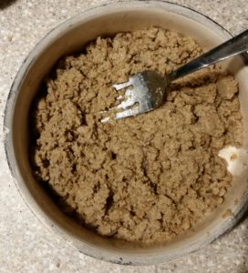

Mushy Dog food

Description
Perfect for those who love brutalist websites and brutalist foood for their pups
this recipe makes it easy to see whether you love your dog or not because it takes some effort
Ingriedients
- 3 pounds ground beef 7 cups cooked crumbled ground beef
- 2 cups brown rice or swap white rice
- 1 teaspoon sea salt
- 1 tablespoon butter
- 28 ounces beef stock (optional)
+ ½ cup water 28 oz = 3.5 cups, add ½ cup water for proper ratio to make rice
- 1 ½ cups fresh broccoli, shred or cut finely or a 12 oz frozen bag
- 2 cups fresh carrots, shred or cut into small coins 2 large carrots
- 2 cups sweet potato, small cubes or shred 1 large sweet potato
- 2 cups fresh spinach
Steps
- Rinse the rice in a fine mesh strainer for about 30
seconds under cold water. It removes starches that makes rice sticky.
- Bring the broth stock/water to a boil, add rice and salt (skip salt if using buillon).
And if you want to add a tab of butter, too, go for it —
your rice will taste 10x better. Cover the pot and
simmer for 18 minutes on low and don't remove the lid!
- Chop, shread, or process in a food processor all the veggies. My dog is a small dog and
prefers the veggies finely shredded in a food processor.
- Brown and crumble 3 lbs of ground beef in a large skillet. Place in a large bowl.
- In a large cast iron pan or skillet, briefly saute carrots, broccoli,
and sweet potato until just soft for a few minutes on medium.
- Into the large bowl with ground beef, add warm rice, warm sauted veggies,
and fresh spinach. Mix well with a large spatula.
return to home